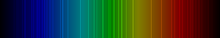

Radon
| 
Spectral lines of radon
|
|||||||||||||||||||||||||||||||||||||||||||||||||||||||||||||||||||||||||||||||||||||||||||||||||||||||||||||||||||||||||||||||||||||||||||||||||||||||||||||||||||||||||||||||||||||||||||||||||||||||||||||||||||||||||||||||||||||
| General properties | |||||||||||||||||||||||||||||||||||||||||||||||||||||||||||||||||||||||||||||||||||||||||||||||||||||||||||||||||||||||||||||||||||||||||||||||||||||||||||||||||||||||||||||||||||||||||||||||||||||||||||||||||||||||||||||||||||||
|---|---|---|---|---|---|---|---|---|---|---|---|---|---|---|---|---|---|---|---|---|---|---|---|---|---|---|---|---|---|---|---|---|---|---|---|---|---|---|---|---|---|---|---|---|---|---|---|---|---|---|---|---|---|---|---|---|---|---|---|---|---|---|---|---|---|---|---|---|---|---|---|---|---|---|---|---|---|---|---|---|---|---|---|---|---|---|---|---|---|---|---|---|---|---|---|---|---|---|---|---|---|---|---|---|---|---|---|---|---|---|---|---|---|---|---|---|---|---|---|---|---|---|---|---|---|---|---|---|---|---|---|---|---|---|---|---|---|---|---|---|---|---|---|---|---|---|---|---|---|---|---|---|---|---|---|---|---|---|---|---|---|---|---|---|---|---|---|---|---|---|---|---|---|---|---|---|---|---|---|---|---|---|---|---|---|---|---|---|---|---|---|---|---|---|---|---|---|---|---|---|---|---|---|---|---|---|---|---|---|---|---|---|---|---|---|---|---|---|---|---|---|---|---|---|---|---|---|---|---|
| Name, symbol | radon, Rn | ||||||||||||||||||||||||||||||||||||||||||||||||||||||||||||||||||||||||||||||||||||||||||||||||||||||||||||||||||||||||||||||||||||||||||||||||||||||||||||||||||||||||||||||||||||||||||||||||||||||||||||||||||||||||||||||||||||
| Pronunciation | /ˈreɪdɒn/ RAY-don | ||||||||||||||||||||||||||||||||||||||||||||||||||||||||||||||||||||||||||||||||||||||||||||||||||||||||||||||||||||||||||||||||||||||||||||||||||||||||||||||||||||||||||||||||||||||||||||||||||||||||||||||||||||||||||||||||||||
| Appearance | colorless gas, occasionally glows green or red in discharge tubes | ||||||||||||||||||||||||||||||||||||||||||||||||||||||||||||||||||||||||||||||||||||||||||||||||||||||||||||||||||||||||||||||||||||||||||||||||||||||||||||||||||||||||||||||||||||||||||||||||||||||||||||||||||||||||||||||||||||
| Radon in the periodic table | |||||||||||||||||||||||||||||||||||||||||||||||||||||||||||||||||||||||||||||||||||||||||||||||||||||||||||||||||||||||||||||||||||||||||||||||||||||||||||||||||||||||||||||||||||||||||||||||||||||||||||||||||||||||||||||||||||||
|
|||||||||||||||||||||||||||||||||||||||||||||||||||||||||||||||||||||||||||||||||||||||||||||||||||||||||||||||||||||||||||||||||||||||||||||||||||||||||||||||||||||||||||||||||||||||||||||||||||||||||||||||||||||||||||||||||||||
| Atomic number | 86 | ||||||||||||||||||||||||||||||||||||||||||||||||||||||||||||||||||||||||||||||||||||||||||||||||||||||||||||||||||||||||||||||||||||||||||||||||||||||||||||||||||||||||||||||||||||||||||||||||||||||||||||||||||||||||||||||||||||
| Standard atomic weight | (222) | ||||||||||||||||||||||||||||||||||||||||||||||||||||||||||||||||||||||||||||||||||||||||||||||||||||||||||||||||||||||||||||||||||||||||||||||||||||||||||||||||||||||||||||||||||||||||||||||||||||||||||||||||||||||||||||||||||||
| Element category | noble gas | ||||||||||||||||||||||||||||||||||||||||||||||||||||||||||||||||||||||||||||||||||||||||||||||||||||||||||||||||||||||||||||||||||||||||||||||||||||||||||||||||||||||||||||||||||||||||||||||||||||||||||||||||||||||||||||||||||||
| Group, block | group 18 (noble gases), p-block | ||||||||||||||||||||||||||||||||||||||||||||||||||||||||||||||||||||||||||||||||||||||||||||||||||||||||||||||||||||||||||||||||||||||||||||||||||||||||||||||||||||||||||||||||||||||||||||||||||||||||||||||||||||||||||||||||||||
| Period | period 6 | ||||||||||||||||||||||||||||||||||||||||||||||||||||||||||||||||||||||||||||||||||||||||||||||||||||||||||||||||||||||||||||||||||||||||||||||||||||||||||||||||||||||||||||||||||||||||||||||||||||||||||||||||||||||||||||||||||||
| Electron configuration | [Xe] 4f14 5d10 6s2 6p6 | ||||||||||||||||||||||||||||||||||||||||||||||||||||||||||||||||||||||||||||||||||||||||||||||||||||||||||||||||||||||||||||||||||||||||||||||||||||||||||||||||||||||||||||||||||||||||||||||||||||||||||||||||||||||||||||||||||||
| per shell | 2, 8, 18, 32, 18, 8 | ||||||||||||||||||||||||||||||||||||||||||||||||||||||||||||||||||||||||||||||||||||||||||||||||||||||||||||||||||||||||||||||||||||||||||||||||||||||||||||||||||||||||||||||||||||||||||||||||||||||||||||||||||||||||||||||||||||
| Physical properties | |||||||||||||||||||||||||||||||||||||||||||||||||||||||||||||||||||||||||||||||||||||||||||||||||||||||||||||||||||||||||||||||||||||||||||||||||||||||||||||||||||||||||||||||||||||||||||||||||||||||||||||||||||||||||||||||||||||
| Phase | gas | ||||||||||||||||||||||||||||||||||||||||||||||||||||||||||||||||||||||||||||||||||||||||||||||||||||||||||||||||||||||||||||||||||||||||||||||||||||||||||||||||||||||||||||||||||||||||||||||||||||||||||||||||||||||||||||||||||||
| Melting point | 202 K (−71 °C, −96 °F) | ||||||||||||||||||||||||||||||||||||||||||||||||||||||||||||||||||||||||||||||||||||||||||||||||||||||||||||||||||||||||||||||||||||||||||||||||||||||||||||||||||||||||||||||||||||||||||||||||||||||||||||||||||||||||||||||||||||
| Boiling point | 211.5 K (−61.7 °C, −79.1 °F) | ||||||||||||||||||||||||||||||||||||||||||||||||||||||||||||||||||||||||||||||||||||||||||||||||||||||||||||||||||||||||||||||||||||||||||||||||||||||||||||||||||||||||||||||||||||||||||||||||||||||||||||||||||||||||||||||||||||
| Density at stp (0 °C and 101.325 kPa) | 9.73 g·L−1 | ||||||||||||||||||||||||||||||||||||||||||||||||||||||||||||||||||||||||||||||||||||||||||||||||||||||||||||||||||||||||||||||||||||||||||||||||||||||||||||||||||||||||||||||||||||||||||||||||||||||||||||||||||||||||||||||||||||
| when liquid, at b.p. | 4.4 g·cm−3 | ||||||||||||||||||||||||||||||||||||||||||||||||||||||||||||||||||||||||||||||||||||||||||||||||||||||||||||||||||||||||||||||||||||||||||||||||||||||||||||||||||||||||||||||||||||||||||||||||||||||||||||||||||||||||||||||||||||
| Critical point | 377 K, 6.28 MPa[1] | ||||||||||||||||||||||||||||||||||||||||||||||||||||||||||||||||||||||||||||||||||||||||||||||||||||||||||||||||||||||||||||||||||||||||||||||||||||||||||||||||||||||||||||||||||||||||||||||||||||||||||||||||||||||||||||||||||||
| Heat of fusion | 3.247 kJ·mol−1 | ||||||||||||||||||||||||||||||||||||||||||||||||||||||||||||||||||||||||||||||||||||||||||||||||||||||||||||||||||||||||||||||||||||||||||||||||||||||||||||||||||||||||||||||||||||||||||||||||||||||||||||||||||||||||||||||||||||
| Heat of vaporization | 18.10 kJ·mol−1 | ||||||||||||||||||||||||||||||||||||||||||||||||||||||||||||||||||||||||||||||||||||||||||||||||||||||||||||||||||||||||||||||||||||||||||||||||||||||||||||||||||||||||||||||||||||||||||||||||||||||||||||||||||||||||||||||||||||
| Molar heat capacity | 5R/2 = 20.786 J·mol−1·K−1 | ||||||||||||||||||||||||||||||||||||||||||||||||||||||||||||||||||||||||||||||||||||||||||||||||||||||||||||||||||||||||||||||||||||||||||||||||||||||||||||||||||||||||||||||||||||||||||||||||||||||||||||||||||||||||||||||||||||
vapor pressure
|
|||||||||||||||||||||||||||||||||||||||||||||||||||||||||||||||||||||||||||||||||||||||||||||||||||||||||||||||||||||||||||||||||||||||||||||||||||||||||||||||||||||||||||||||||||||||||||||||||||||||||||||||||||||||||||||||||||||
| Atomic properties | |||||||||||||||||||||||||||||||||||||||||||||||||||||||||||||||||||||||||||||||||||||||||||||||||||||||||||||||||||||||||||||||||||||||||||||||||||||||||||||||||||||||||||||||||||||||||||||||||||||||||||||||||||||||||||||||||||||
| Oxidation states | 6, 2, 0 | ||||||||||||||||||||||||||||||||||||||||||||||||||||||||||||||||||||||||||||||||||||||||||||||||||||||||||||||||||||||||||||||||||||||||||||||||||||||||||||||||||||||||||||||||||||||||||||||||||||||||||||||||||||||||||||||||||||
| Electronegativity | Pauling scale: 2.2 | ||||||||||||||||||||||||||||||||||||||||||||||||||||||||||||||||||||||||||||||||||||||||||||||||||||||||||||||||||||||||||||||||||||||||||||||||||||||||||||||||||||||||||||||||||||||||||||||||||||||||||||||||||||||||||||||||||||
| Ionization energies | 1st: 1037 kJ·mol−1 | ||||||||||||||||||||||||||||||||||||||||||||||||||||||||||||||||||||||||||||||||||||||||||||||||||||||||||||||||||||||||||||||||||||||||||||||||||||||||||||||||||||||||||||||||||||||||||||||||||||||||||||||||||||||||||||||||||||
| Covalent radius | 150 pm | ||||||||||||||||||||||||||||||||||||||||||||||||||||||||||||||||||||||||||||||||||||||||||||||||||||||||||||||||||||||||||||||||||||||||||||||||||||||||||||||||||||||||||||||||||||||||||||||||||||||||||||||||||||||||||||||||||||
| Van der Waals radius | 220 pm | ||||||||||||||||||||||||||||||||||||||||||||||||||||||||||||||||||||||||||||||||||||||||||||||||||||||||||||||||||||||||||||||||||||||||||||||||||||||||||||||||||||||||||||||||||||||||||||||||||||||||||||||||||||||||||||||||||||
| Miscellanea | |||||||||||||||||||||||||||||||||||||||||||||||||||||||||||||||||||||||||||||||||||||||||||||||||||||||||||||||||||||||||||||||||||||||||||||||||||||||||||||||||||||||||||||||||||||||||||||||||||||||||||||||||||||||||||||||||||||
| Crystal structure | face-centered cubic (fcc)
 |
||||||||||||||||||||||||||||||||||||||||||||||||||||||||||||||||||||||||||||||||||||||||||||||||||||||||||||||||||||||||||||||||||||||||||||||||||||||||||||||||||||||||||||||||||||||||||||||||||||||||||||||||||||||||||||||||||||
| Thermal conductivity | 3.61×10−3 W·m−1·K−1 | ||||||||||||||||||||||||||||||||||||||||||||||||||||||||||||||||||||||||||||||||||||||||||||||||||||||||||||||||||||||||||||||||||||||||||||||||||||||||||||||||||||||||||||||||||||||||||||||||||||||||||||||||||||||||||||||||||||
| Magnetic ordering | non-magnetic | ||||||||||||||||||||||||||||||||||||||||||||||||||||||||||||||||||||||||||||||||||||||||||||||||||||||||||||||||||||||||||||||||||||||||||||||||||||||||||||||||||||||||||||||||||||||||||||||||||||||||||||||||||||||||||||||||||||
| CAS Registry Number | 10043-92-2 | ||||||||||||||||||||||||||||||||||||||||||||||||||||||||||||||||||||||||||||||||||||||||||||||||||||||||||||||||||||||||||||||||||||||||||||||||||||||||||||||||||||||||||||||||||||||||||||||||||||||||||||||||||||||||||||||||||||
| History | |||||||||||||||||||||||||||||||||||||||||||||||||||||||||||||||||||||||||||||||||||||||||||||||||||||||||||||||||||||||||||||||||||||||||||||||||||||||||||||||||||||||||||||||||||||||||||||||||||||||||||||||||||||||||||||||||||||
| Discovery | Friedrich Ernst Dorn (1898) | ||||||||||||||||||||||||||||||||||||||||||||||||||||||||||||||||||||||||||||||||||||||||||||||||||||||||||||||||||||||||||||||||||||||||||||||||||||||||||||||||||||||||||||||||||||||||||||||||||||||||||||||||||||||||||||||||||||
| First isolation | William Ramsay and Robert Whytlaw-Gray (1910) | ||||||||||||||||||||||||||||||||||||||||||||||||||||||||||||||||||||||||||||||||||||||||||||||||||||||||||||||||||||||||||||||||||||||||||||||||||||||||||||||||||||||||||||||||||||||||||||||||||||||||||||||||||||||||||||||||||||
| Most stable isotopes | |||||||||||||||||||||||||||||||||||||||||||||||||||||||||||||||||||||||||||||||||||||||||||||||||||||||||||||||||||||||||||||||||||||||||||||||||||||||||||||||||||||||||||||||||||||||||||||||||||||||||||||||||||||||||||||||||||||
|
|||||||||||||||||||||||||||||||||||||||||||||||||||||||||||||||||||||||||||||||||||||||||||||||||||||||||||||||||||||||||||||||||||||||||||||||||||||||||||||||||||||||||||||||||||||||||||||||||||||||||||||||||||||||||||||||||||||
{kind=link}
Radon is a chemical element with symbol Rn and atomic number 86. It is a radioactive, colorless, odorless, tasteless[2] noble gas, occurring naturally as an indirect decay product of uranium or thorium. Its most stable isotope, 222Rn, has a half-life of 3.8 days. Radon is one of the densest substances that remains a gas under normal conditions. It is also the only gas under normal conditions that only has radioactive isotopes, and is considered a health hazard due to its radioactivity. Intense radioactivity has also hindered chemical studies of radon and only a few compounds are known.
Radon is formed as one intermediate step in the normal radioactive decay chains through which thorium and uranium slowly decay into lead. Thorium and uranium are the two most common radioactive elements on earth; they have been around since the earth was formed. Their naturally occurring isotopes have very long half-lives, on the order of billions of years. Thorium and uranium, their decay product radium, and its decay product radon, will therefore continue to occur for tens of millions of years at almost the same concentrations as they do now.[3] As radon itself decays, it produces new radioactive elements called radon daughters or decay products. Unlike the gaseous radon itself, radon daughters are solids and stick to surfaces, such as dust particles in the air. If such contaminated dust is inhaled, these particles can stick to the airways of the lung and increase the risk of developing lung cancer.[4]
Unlike all the other intermediate elements in the aforementioned decay chains, radon is gaseous and easily inhaled. Thus, even in this age of nuclear reactors, naturally-occurring radon is responsible for the majority of the public exposure to ionizing radiation. It is often the single largest contributor to an individual's background radiation dose, and is the most variable from location to location. Despite its short lifetime, some radon gas from natural sources can accumulate to far higher than normal concentrations in buildings, especially in low areas such as basements and crawl spaces due to its heavy nature. It can also be found in some spring waters and hot springs.[5]
Epidemiological studies have shown a clear link between breathing high concentrations of radon and incidence of lung cancer. Thus, radon is considered a significant contaminant that affects indoor air quality worldwide. According to the United States Environmental Protection Agency, radon is the second most frequent cause of lung cancer, after cigarette smoking, causing 21,000 lung cancer deaths per year in the United States. About 2,900 of these deaths occur among people who have never smoked. While radon is the second most frequent cause of lung cancer, it is the number one cause among non-smokers, according to EPA estimates.[6]
Contents
[hide]Characteristics[edit]
{kind=link}
Physical properties[edit]
Radon is a colorless, odorless, and tasteless gas and therefore not detectable by human senses alone. At standard temperature and pressure, radon forms a monatomic gas with a density of 9.73 kg/m3,[7] about 8 times the density of the Earth's atmosphere at sea level, 1.217 kg/m3.[8] Radon is one of the densest gases at room temperature and is the densest of the noble gases. Although colorless at standard temperature and pressure, when cooled below its freezing point of 202 K (−71 °C; −96 °F), radon emits a brilliant radioluminescence that turns from yellow to orange-red as the temperature lowers.[9] Upon condensation, radon glows because of the intense radiation it produces.[10] Radon is sparingly soluble in water, but more soluble than lighter noble gases. Radon is appreciably more soluble in organic liquids than in water.
Chemical properties[edit]
Being a noble gas, radon is chemically not very reactive. However, the 3.8-day half-life of radon-222 makes it useful in physical sciences as a natural tracer.
Radon is a member of the zero-valence elements that are called noble gases. It is inert to most common chemical reactions, such as combustion, because the outer valence shell contains eight electrons. This produces a stable, minimum energy configuration in which the outer electrons are tightly bound.[11] 1037 kJ/mol is required to extract one electron from its shells (also known as the first ionization energy).[12] However, in accordance with periodic trends, radon has a lower electronegativity than the element one period before it, xenon, and is therefore more reactive. Early studies concluded that the stability of radon hydrate should be of the same order as that of the hydrates of chlorine (Cl
2) or sulfur dioxide (SO
2), and significantly higher than the stability of the hydrate of hydrogen sulfide (H
2S).[13]
Because of its cost and radioactivity, experimental chemical research is seldom performed with radon, and as a result there are very few reported compounds of radon, all either fluorides or oxides. Radon can be oxidized by a few powerful oxidizing agents such as fluorine, thus forming radon difluoride.[14][15] It decomposes back to elements at a temperature of above 250 °C. It has a low volatility and was thought to be RnF
2. But because of the short half-life of radon and the radioactivity of its compounds, it has not been possible to study the compound in any detail. Theoretical studies on this molecule predict that it should have a Rn–F bond distance of 2.08 Å, and that the compound is thermodynamically more stable and less volatile than its lighter counterpart XeF
2.[16] The octahedral molecule RnF
6 was predicted to have an even lower enthalpy of formation than the difluoride.[17] The higher fluorides RnF4 and RnF6 have been claimed to exist,[18] and are calculated to be stable,[19] but it is doubtful whether they have actually been synthesized.[18] The [RnF]+ ion is believed to form by the following reaction:[20]
- Rn (g) + 2 [O
2]+
[SbF
6]−
(s) → [RnF]+
[Sb
2F
11]−
(s) + 2 O
2 (g)
Radon oxides are among the few other reported compounds of radon;[21] only the trioxide has been confirmed.[18] Radon carbonyl RnCO has been predicted to be stable and to have a linear molecular geometry.[22] The molecules Rn
2 and RnXe were found to be significantly stabilized by spin-orbit coupling.[23] Radon caged inside a fullerene has been proposed as a drug for tumors.[24] Despite the existence of Xe(VIII), no Rn(VIII) compounds have been claimed to exist; RnF8 should be highly unstable chemically (XeF8 is thermodynamically unstable). It is predicted that the most stable Rn(VIII) compound would be barium perradate (Ba2RnO6), analogous to barium perxenate.[19] The instability of Rn(VIII) is due to the relativistic stabilization of the 6s shell, also known as the inert pair effect.[19]
Isotopes[edit]
.svg){kind=link}
Radon has no stable isotopes. However, 36 radioactive isotopes have been characterized, with their atomic masses ranging from 193 to 228.[25] The most stable isotope is 222Rn, which is a decay product of 226Ra, a decay product of 238U.[26] A very trace amount of the (highly unstable) isotope 218Rn is also among the daughters of 222Rn.
There are three other radon isotopes that have a half-life of over an hour: 211Rn, 210Rn and 224Rn. The 220Rn isotope is a natural decay product of the most stable thorium isotope (232Th), and is commonly referred to as thoron. It has a half-life of 55.6 seconds and also emits alpha radiation. Similarly, 219Rn is derived from the most stable isotope of actinium (227Ac)—named "actinon"—and is an alpha emitter with a half-life of 3.96 seconds.[25] No radon isotopes occur significantly in the neptunium (237Np) decay series, though a trace amount of the (extremely unstable) isotope 217Rn is produced.
Progenies[edit]
222Rn belongs to the radium and uranium-238 decay chain, and has a half-life of 3.8235 days. Its four first products (excluding marginal decay schemes) are very short-lived, meaning that the corresponding disintegrations are indicative of the initial radon distribution. Its decay goes through the following sequence:[25]
- 222Rn, 3.8 days, alpha decaying to...
- 218Po, 3.10 minutes, alpha decaying to...
- 214Pb, 26.8 minutes, beta decaying to...
- 214Bi, 19.9 minutes, beta decaying to...
- 214Po, 0.1643 ms, alpha decaying to...
- 210Pb, which has a much longer half-life of 22.3 years, beta decaying to...
- 210Bi, 5.013 days, beta decaying to...
- 210Po, 138.376 days, alpha decaying to...
- 206Pb, stable.
The radon equilibrium factor[27] is the ratio between the activity of all short-period radon progenies (which are responsible for most of radon's biological effects), and the activity that would be at equilibrium with the radon parent.
If a closed volume is constantly supplied with radon, the concentration of short-lived isotopes will increase until an equilibrium is reached where the rate of decay of each decay product will equal that of the radon itself. The equilibrium factor is 1 when both activities are equal, meaning that the decay products have stayed close to the radon parent long enough for the equilibrium to be reached, within a couple of hours. Under these conditions each additional pCi/L of radon will increase exposure, by 0.01 WL (see explanation of WL below). These conditions are not always met; in many homes, the equilibrium fraction is typically 40%; that is, there will be 0.004 WL of progeny for each pCi/L of radon in air.[28] 210Pb takes much longer (decades) to come in equilibrium with radon, but, if the environment permits accumulation of dust over extended periods of time, 210Pb and its decay products may contribute to overall radiation levels as well.
Because of their electrostatic charge, radon progenies adhere to surfaces or dust particles, whereas gaseous radon does not. Attachment removes them from the air, usually causing the equilibrium factor in the atmosphere to be less than one. The equilibrium factor is also lowered by air circulation or air filtration devices, and is increased by airborne dust particles, including cigarette smoke. In high concentrations, airborne radon isotopes contribute significantly to human health risk. The equilibrium factor found in epidemiological studies is 0.4.[29]
History and etymology[edit]
{kind=link}
Radon was the fifth radioactive element to be discovered, in 1900 by Friedrich Ernst Dorn,[30] after uranium, thorium, radium and polonium.[31][32][33][34][35] In 1900 Dorn reported some experiments in which he noticed that radium compounds emanate a radioactive gas he named Radium Emanation (Ra Em).[36] Before that, in 1899, Pierre and Marie Curie observed that the gas emitted by radium remained radioactive for a month.[37] Later that year, Robert B. Owens and Ernest Rutherford, at McGill University in Montreal, noticed variations when trying to measure radiation from thorium oxide.[38] Rutherford noticed that the compounds of thorium continuously emit a radioactive gas that retains the radioactive powers for several minutes, and called this gas emanation (from Latin "emanare"—to elapse and "emanatio"—expiration),[39] and later Thorium Emanation (Th Em). In 1901, he demonstrated that the emanations are radioactive, but credited the Curies for the discovery of the element.[40] In 1903, similar emanations were observed from actinium by André-Louis Debierne[41][42] and were called Actinium Emanation (Ac Em).
Several names were suggested for these three gases: exradio, exthorio, and exactinio in 1904;[43] radon, thoron, and akton in 1918;[44] radeon, thoreon, and actineon in 1919,[45] and eventually radon, thoron, and actinon in 1920.[46] The likeness of the spectra of these three gases with those of argon, krypton, and xenon, and their observed chemical inertia led Sir William Ramsay to suggest in 1904 that the "emanations" might contain a new element of the noble gas family.[43]
In 1910, Sir William Ramsay and Robert Whytlaw-Gray isolated radon, determined its density, and determined that it was the heaviest known gas.[47] They wrote that "L'expression de l'émanation du radium est fort incommode", (the expression 'radium emanation' is very awkward) and suggested the new name niton (Nt) (from the Latin "nitens" meaning "shining") to emphasize the radioluminescence property,[47] and in 1912 it was accepted by the International Commission for Atomic Weights. In 1923, the International Committee for Chemical Elements and International Union of Pure and Applied Chemistry (IUPAC) chose among the names radon (Rn), thoron (Tn), and actinon (An). Later, when isotopes were numbered instead of named, the element took the name of the most stable isotope, radon, while Tn was renamed 220Rn and An was renamed 219Rn. As late as the 1960s, the element was also referred to simply as emanation.[48] The first synthesized compound of radon, radon fluoride, was obtained in 1962.[49]
The danger of high exposure to radon in mines, where exposures reaching 1,000,000 Bq/m3 can be found, has long been known. In 1530, Paracelsus described a wasting disease of miners, the mala metallorum, and Georg Agricola recommended ventilation in mines to avoid this mountain sickness (Bergsucht).[50][51] In 1879, this condition was identified as lung cancer by Herting and Hesse in their investigation of miners from Schneeberg, Germany. The first major studies with radon and health occurred in the context of uranium mining in the Joachimsthal region of Bohemia.[52] In the US, studies and mitigation only followed decades of health effects on uranium miners of the Southwestern United States employed during the early Cold War; standards were not implemented until 1971.[53]
The presence of radon in indoor air was documented as early as 1950. Beginning in the 1970s research was initiated to address sources of indoor radon, determinants of concentration, health effects, and approaches to mitigation. In the United States, the problem of indoor radon received widespread publicity and intensified investigation after a widely publicized incident in 1984. During routine monitoring at a Pennsylvania nuclear power plant, a worker was found to be contaminated with radioactivity. A high contamination of radon in his home was subsequently identified as responsible for the contamination.[54]
Occurrence[edit]
Concentration units[edit]
{kind=link}
All discussions of radon concentrations in the environment refer to 222Rn. While the average rate of production of 220Rn (from the thorium decay series) is about the same as 222Rn, the amount of 220Rn in the environment is much less than that of 222Rn because of the short half-life of 220Rn (55 seconds, versus 3.8 days respectively).[3]
Radon concentration in the atmosphere is usually measured in becquerel per cubic meter (Bq/m3), the SI derived unit. Another unit of measurement common in the USA is picocuries per liter (pCi/L); 1 pCi/L=37 Bq/m3.[28] Typical domestic exposures average about 48 Bq/m3 indoors, though this varies widely, and 15 Bq/m3 outdoors.[56]
In the mining industry, the exposure is traditionally measured in working level (WL), and the cumulative exposure in working level month (WLM); 1 WL equals any combination of short-lived 222Rn progeny (218Po, 214Pb, 214Bi, and 214Po) in 1 liter of air that releases 1.3 × 105 MeV of potential alpha energy;[28] one WL is equivalent to 2.08 × 10−5 joules per cubic meter of air (J/m3).[3] The SI unit of cumulative exposure is expressed in joule-hours per cubic meter (J·h/m3). One WLM is equivalent to 3.6 × 10−3 J·h/m3. An exposure to 1 WL for 1 working month (170 hours) equals 1 WLM cumulative exposure. A cumulative exposure of 1 WLM is roughly equivalent to living one year in an atmosphere with a radon concentration of 230 Bq/m3.[57]
Radon (222Rn), decays to 210Pb and other radioisotopes. The levels of 210Pb can be measured. The rate of deposition of this radioisotope is weather-dependent.
Radon concentrations found in natural environments are much too low to be detected by chemical means. A 1000 Bq/m3 (relatively high) concentration corresponds to 0.17 picogram per cubic meter. The average concentration of radon in the atmosphere is about 6×10−20 atoms of radon for each molecule in the air, or about 150 atoms in each ml of air.[58] The radon activity of the entire Earth's atmosphere originates from only a few tens of grams of radon, consistently replaced by decay of larger amounts of radium and uranium.[59]
Natural[edit]
{kind=link}
Radon is produced by the radioactive decay of radium-226, which is found in uranium ores; phosphate rock; shales; igneous and metamorphic rocks such as granite, gneiss, and schist; and, to a lesser degree, in common rocks such as limestone.[60] Every square mile of surface soil, to a depth of 6 inches (2.6 km2 to a depth of 15 cm), contains approximately 1 gram of radium, which releases radon in small amounts to the atmosphere[3] On a global scale, it is estimated that 2,400 million curies (90 TBq) of radon are released from soil annually.[61]
Radon concentration varies widely from place to place. In the open air, it ranges from 1 to 100 Bq/m3, even less (0.1 Bq/m3) above the ocean. In caves or aerated mines, or ill-aerated houses, its concentration climbs to 20–2,000 Bq/m3.[62] Radon concentration can be much higher in mining contexts. Ventilation regulations instruct to maintain radon concentration in uranium mines under the "working level", with 95th percentile levels ranging up to nearly 3 WL (546 pCi 222Rn per liter of air; 20.2 kBq/m3, measured from 1976 to 1985).[3] The concentration in the air at the (unventilated) Gastein Healing Gallery averages 43 kBq/m3 (1.2 nCi/L) with maximal value of 160 kBq/m3 (4.3 nCi/L).[63]
Radon mostly appears with the decay chain of the radium and uranium series (222Rn), and marginally with the thorium series (220Rn). The element emanates naturally from the ground, and some building materials, all over the world, wherever traces of uranium or thorium can be found, and particularly in regions with soils containing granite or shale, which have a higher concentration of uranium. However, not all granitic regions are prone to high emissions of radon. Being a rare gas, it usually migrates freely through faults and fragmented soils, and may accumulate in caves or water. Owing to its very short half-life (four days for 222Rn), radon concentration decreases very quickly when the distance from the production area increases. Radon concentration varies greatly with season and atmospheric conditions. For instance, it has been shown to accumulate in the air if there is a meteorological inversion and little wind.[64]
High concentrations of radon can be found in some spring waters and hot springs.[65] The towns of Boulder, Montana; Misasa; Bad Kreuznach, Germany; and the country of Japan have radium-rich springs that emit radon. To be classified as a radon mineral water, radon concentration must be above a minimum of 2 nCi/L (74 kBq/m3).[66] The activity of radon mineral water reaches 2,000 kBq/m3 in Merano and 4,000 kBq/m3 in Lurisia (Italy).[63]
Natural radon concentrations in the Earth's atmosphere are so low that radon-rich water in contact with the atmosphere will continually lose radon by volatilization. Hence, ground water has a higher concentration of 222Rn than surface water, because radon is continuously produced by radioactive decay of 226Ra present in rocks. Likewise, the saturated zone of a soil frequently has a higher radon content than the unsaturated zone because of diffusional losses to the atmosphere.[67][68]
In 1971, Apollo 15 passed 110 km (68 mi) above the Aristarchus plateau on the Moon, and detected a significant rise in alpha particles thought to be caused by the decay of 222Rn. The presence of 222Rn has been inferred later from data obtained from the Lunar Prospector alpha particle spectrometer.[69]
Radon is found in some petroleum. Because radon has a similar pressure and temperature curve to propane, and oil refineries separate petrochemicals based on their boiling points, the piping carrying freshly separated propane in oil refineries can become radioactive because of decaying radon and its products.[70]
Residues from the petroleum and natural gas industry often contain radium and its daughters. The sulfate scale from an oil well can be radium rich, while the water, oil, and gas from a well often contains radon. Radon decays to form solid radioisotopes that form coatings on the inside of pipework.[70]
Accumulation in houses[edit]
{kind=link}
High concentrations of radon in homes were discovered by chance in 1985 after the stringent radiation testing conducted at a nuclear power plant entrance revealed that Stanley Watras, an engineer entering the plant, was contaminated by radioactive substances.[71] Typical domestic exposures are of approximately 100 Bq/m3 (1.3 pCi/L) indoors. Some level of radon will be found in all homes. Radon mostly enters a home directly from the soil through the lowest level in the home that is in contact with the ground. High levels of radon in the water supply can also increase indoor radon air levels. Typical entry points of radon into homes are cracks in solid foundations, construction joints, cracks in walls, gaps in suspended floors, gaps around service pipes, cavities inside walls, and the water supply.[2] Radon concentrations in the same location may differ by a factor of two over a period of 1 hour. Also, the concentration in one room of a building may be significantly different from the concentration in an adjoining room.[3]
The distribution of radon concentrations will generally change from room to room, and the readings are averaged according to regulatory protocols. Indoor radon concentration is usually assumed to follow a lognormal distribution on a given territory.[72] Thus, the geometric mean is generally used for estimating the "average" radon concentration in an area.[73]
The mean concentration ranges from less than 10 Bq/m3 to over 100 Bq/m3 in some European countries.[74] Typical geometric standard deviations found in studies range between 2 and 3, meaning (given the 68–95–99.7 rule) that the radon concentration is expected to be more than a hundred times the mean concentration for 2 to 3% of the cases.
The highest average radon concentrations in the United States are found in Iowa and in the Appalachian Mountain areas in southeastern Pennsylvania.[75] Some of the highest readings ever have been recorded in the Irish town of Mallow, County Cork, prompting local fears regarding lung cancer. Iowa has the highest average radon concentrations in the United States due to significant glaciation that ground the granitic rocks from the Canadian Shield and deposited it as soils making up the rich Iowa farmland.[76] Many cities within the state, such as Iowa City, have passed requirements for radon-resistant construction in new homes.
In a few locations, uranium tailings have been used for landfills and were subsequently built on, resulting in possible increased exposure to radon.[3]
Since radon is a colorless, odorless gas the only way to know how much is present in the air or water is to perform tests. In the United States radon test kits are available to the public at retail stores, such as hardware stores, for home use and testing is available through licensed professionals, who are often home inspectors. Efforts to reduce indoor radon levels are called radon mitigation. In the U.S. the Environmental Protection Agency recommends all houses be tested for radon.
Industrial production[edit]
Radon is obtained as a by-product of uraniferous ores processing after transferring into 1% solutions of hydrochloric or hydrobromic acids. The gas mixture extracted from the solutions contains H
2, O
2, He, Rn, CO
2, H
2O and hydrocarbons. The mixture is purified by passing it over copper at 720 °C to remove the H
2 and the O
2, and then KOH and P
2O
5 are used to remove the acids and moisture by sorption. Radon is condensed by liquid nitrogen and purified from residue gases by sublimation.[77]
Radon commercialization is regulated, but it is available in small quantities for the calibration of 222Rn measurement systems, at a price of almost $6,000 per milliliter of radium solution (which only contains about 15 picograms of actual radon at a given moment).[78] Radon is produced by a solution of radium-226 (half-life of 1600 years). Radium-226 decays by alpha-particle emission, producing radon that collects over samples of radium-226 at a rate of about 1 mm3/day per gram of radium; equilibrium is quickly achieved and radon is produced in a steady flow, with an activity equal to that of the radium (50 Bq). Gaseous 222Rn (half-life of about four days) escapes from the capsule through diffusion.[79]
Concentration scale[edit]
| Bq/m3 | pCi/L | Occurrence example |
|---|---|---|
| 1 | ~0.027 | Radon concentration at the shores of large oceans is typically 1 Bq/m3.
Radon trace concentration above oceans or in Antarctica can be lower than 0.1 Bq/m3. |
| 10 | 0.27 | Mean continental concentration in the open air: 10 to 30 Bq/m3.
Based on a series of surveys, the global mean indoor radon concentration is estimated to be 39 Bq/m3. |
| 100 | 2.7 | Typical indoor domestic exposure. Most countries have adopted a radon concentration of 200–400 Bq/m3 for indoor air as an Action or Reference Level. If testing shows levels less than 4 picocuries radon per liter of air (150 Bq/m3), then no action is necessary. A cumulated exposure of 230 Bq/m3 of radon gas concentration during a period of 1 year corresponds to 1 WLM. Allowable concentrations in uranium mines are approximately 1,220 Bq/m3 (33 pCi/L)[80] |
| 1,000 | 27 | Very high radon concentrations (>1000 Bq/m3) have been found in houses built on soils with a high uranium content and/or high permeability of the ground. If levels are 20 picocuries radon per liter of air (800 Bq/m3) or higher, the home owner should consider some type of procedure to decrease indoor radon levels. |
| 10,000 | 270 |
The concentration in the air at the (unventilated) Gastein Healing Gallery averages 43 kBq/m3 (about 1.2 nCi/L) with maximal value of 160 kBq/m3 (about 4.3 nCi/L).[63] |
| 100,000 | ~2700 |
About 100,000 Bq/m3 (2.7 nCi/L) was measured in Stanley Watras's basement.[81][82] |
| 1,000,000 | 27000 | Concentrations reaching 1,000,000 Bq/m3 can be found in unventilated uranium mines. |
Applications[edit]
Medical[edit]
An early-20th-century form of quackery was the treatment of maladies in a radiotorium.[83] It was a small, sealed room for patients to be exposed to radon for its "medicinal effects". The carcinogenic nature of radon due to its ionizing radiation became apparent later on. Radon's molecule-damaging radioactivity has been used to kill cancerous cells.[84] It does not, however, increase the health of healthy cells. In fact, the ionizing radiation causes the formation of free radicals, which results in genetic and other cell damage, resulting in increased rates of illness, including cancer.
Exposure to radon, a process known as radiation hormesis, has been suggested to mitigate auto-immune diseases such as arthritis.[85][86] As a result, in the late 20th century and early 21st century, "health mines" established in Basin, Montana attracted people seeking relief from health problems such as arthritis through limited exposure to radioactive mine water and radon. However, the practice is discouraged because of the well-documented ill effects of high-doses of radiation on the body.[87]
Radioactive water baths have been applied since 1906 in Jáchymov, Czech Republic, but even before radon discovery they were used in Bad Gastein, Austria. Radium-rich springs are also used in traditional Japanese onsen in Misasa, Tottori Prefecture. Drinking therapy is applied in Bad Brambach, Germany. Inhalation therapy is carried out in Gasteiner-Heilstollen, Austria, in Świeradów-Zdrój, Czerniawa-Zdrój, Kowary, Lądek Zdrój, Poland, in Harghita Băi, Romania, and in Boulder, United States. In the United States and Europe there are several "radon spas," where people sit for minutes or hours in a high-radon atmosphere in the belief that low doses of radiation will invigorate or energize them.[86][88]
Radon has been produced commercially for use in radiation therapy, but for the most part has been replaced by radionuclides made in accelerators and nuclear reactors. Radon has been used in implantable seeds, made of gold or glass, primarily used to treat cancers. The gold seeds were produced by filling a long tube with radon pumped from a radium source, the tube being then divided into short sections by crimping and cutting. The gold layer keeps the radon within, and filters out the alpha and beta radiations, while allowing the gamma rays to escape (which kill the diseased tissue). The activities might range from 0.05 to 5 millicuries per seed (2 to 200 MBq).[84] The gamma rays are produced by radon and the first short-lived elements of its decay chain (218Po, 214Pb, 214Bi, 214Po).
Radon and its first decay products being very short-lived, the seed is left in place. After 12 half-lives (43 days), radon radioactivity is at 1/2000 of its original level. At this stage, the predominant residual activity originates from the radon decay product 210Pb, whose half-life (22.3 years) is 2000 times that of radon (and whose activity is thus 1/2000 of radon's), and its descendants 210Bi and 210Po.
In the early part of the 20th century in the USA, gold contaminated with 210Pb entered the jewelry industry. This was from gold seeds that had held 222Rn that had been melted down after the radon had decayed.[89][90]
Scientific[edit]
Radon emanation from the soil varies with soil type and with surface uranium content, so outdoor radon concentrations can be used to track air masses to a limited degree. This fact has been put to use by some atmospheric scientists. Because of radon's rapid loss to air and comparatively rapid decay, radon is used in hydrologic research that studies the interaction between ground water and streams. Any significant concentration of radon in a stream is a good indicator that there are local inputs of ground water.
Radon soil-concentration has been used in an experimental way to map buried close-subsurface geological faults because concentrations are generally higher over the faults.[91] Similarly, it has found some limited use in prospecting for geothermal gradients.[92]
Some researchers have investigated changes in groundwater radon concentrations for earthquake prediction.[93][94][95] Radon has a half-life of approximately 3.8 days, which means that it can be found only shortly after it has been produced in the radioactive decay chain. For this reason, it has been hypothesized that increases in radon concentration is due to the generation of new cracks underground, which would allow increased ground water circulation, flushing out radon. The generation of new cracks might not unreasonably be assumed to precede major earthquakes. In the 1970s and 1980s, scientific measurements of radon emissions near faults found that earthquakes often occurred with no radon signal, and radon was often detected with no earthquake to follow. It was then dismissed by many as an unreliable indicator.[96] However, as of 2009, it is under investigation as a possible precursor by NASA.[97]
Radon is a known pollutant emitted from geothermal power stations because it is present in the material pumped from deep underground. However, it disperses rapidly, and no radiological hazard has been demonstrated in various investigations. In addition, typical systems re-inject the material deep underground rather that releasing it at the surface, so its environmental impact is minimal.[98]
In the 1940s and 50s, radon was used for industrial radiography,[99][100] Other X-ray sources, which became available after World War II, quickly replaced radon for this application, as they were lower in cost and had less hazard of alpha radiation.
Health risks[edit]
In mines[edit]
{kind=link}
Radon-222 (actually radon progeny) has been classified by International Agency for Research on Cancer as being carcinogenic to humans,[101] and as a gas that can be inhaled, lung cancer is a particular concern for people exposed to high levels of radon for sustained periods of time. During the 1940s and 50s, when safety standards requiring expensive ventilation in mines were not widely implemented,[102] radon exposure was linked to lung cancer among non-smoking miners of uranium and other hard rock materials in what is now the Czech Republic, and later among miners from the Southwestern United States[103][104][105] and South Australia.[106]
Since that time, ventilation and other measures have been used to reduce radon levels in most affected mines that continue to operate. In recent years, the average annual exposure of uranium miners has fallen to levels similar to the concentrations inhaled in some homes. This has reduced the risk of occupationally induced cancer from radon, although health issues may persist for those who are currently employed in affected mines and for those who have been employed in them in the past.[107] As the relative risk for miners has decreased, so has the ability to detect excess risks among that population.[108]
In addition to lung cancer, researchers have theorized a possible increased risk of leukemia due to radon exposure. Empirical support from studies of the general population is inconsistent. However, a study of uranium miners found a noticeable correlation between radon exposure and chronic lymphocytic leukemia.[109]
Domestic-level exposure[edit]
Radon exposure (actually radon progeny) has been linked to lung cancer in numerous case-control studies performed in the United States, Europe and China. There are approximately 21,000 deaths per year in the USA due to radon-induced lung cancers.[6] One of the most comprehensive radon studies performed in the United States by Dr. R. William Field and colleagues found a 50% increased lung cancer risk even at the protracted exposures at the EPA's action level of 4 pCi/L. North American and European Pooled analyses further support these findings.[110]
{kind=link}
Most models of residential radon exposure are based on studies of miners, and direct estimates of the risks posed to homeowners would be more desirable.[107] Nonetheless, because of the difficulties of measuring the risk of radon relative to other contributors—namely smoking—models of their effect have often made use of them.
Radon has been considered the second leading cause of lung cancer and leading environmental cause of cancer mortality by the United States Environmental Protection Agency.[114] Others have reached similar conclusions for the United Kingdom[107] and France.[115] Radon exposure in homes and offices may arise from certain subsurface rock formations, and also from certain building materials (e.g., some granites). The greatest risk of radon exposure arises in buildings that are airtight, insufficiently ventilated, and have foundation leaks that allow air from the soil into basements and dwelling rooms.
Action and reference level[edit]
WHO presented in 2009 a recommended reference level (the national reference level), 100 Bq/m3, for radon in dwellings. The recommendation also says that where this is not possible, 300 Bq/m3 should be selected as the highest level. A national reference level should not be a limit, but should represent the maximum acceptable annual average radon concentration in a dwelling.[116]
The actionable concentration of radon in a home varies depending on the organization doing the recommendation, for example, the United States Environmental Protection Agency encourages that action be taken at concentrations as low as 74 Bq/m3 (2 pCi/L),[56] and the European Union recommends action be taken when concentrations reach 400 Bq/m3 (11 pCi/L) for old houses and 200 Bq/m3 (5 pCi/L) for new ones.[117] On 8 July 2010 the UK's Health Protection Agency issued new advice setting a "Target Level" of 100 Bq/m3 whilst retaining an "Action Level" of 200 Bq/m3.[118] The same levels (as UK) apply to Norway from 2010; in all new housings preventative measures should be taken against radon accumulation.
Relationship to smoking[edit]
Results from epidemiological studies indicate that the risk of lung cancer increases with exposure to residential radon. However, there are always major uncertainties in these studies. A classical and well-known example of source of error is smoking. In addition, smoking is the most important risk factor for lung cancer. In the West, tobacco smoke is estimated to cause about 90% of all lung cancers. There is a tendency for other hypothetical lung cancer risks to drown in the risk of smoking. Results from epidemiological studies must always be interpreted with caution.
According to the EPA, the risk of lung cancer for smokers is significant due to synergistic effects of radon and smoking. For this population about 62 people in a total of 1,000 will die of lung cancer compared to 7 people in a total of 1,000 for people who have never smoked.[6] It can, however, not be excluded that the risk of non-smokers should be primarily explained by a combination effect of radon and passive smoking (see below).
Radon, like other known or suspected external risk factors for lung cancer, is a threat for smokers and former smokers. This was clearly demonstrated by the European pooling study.[119] A commentary[120] to the pooling study stated: "it is not appropriate to talk simply of a risk from radon in homes. The risk is from smoking, compounded by a synergistic effect of radon for smokers. Without smoking, the effect seems to be so small as to be insignificant."
According to the European pooling study, there is a difference in risk from radon between histological types. Small cell lung carcinoma, which practically only affects smokers have high risk from radon. For other histological types such as adenocarcinoma, the type that primarily affects never smokers, the risk from radon appears to be lower.[119][121]
A study[122] of radiation from post mastectomy radiotherapy shows that the simple models previously used to assess the combined and separate risks from radiation and smoking need to be developed. This is also supported by new discussion about the calculation method, LNT, which routinely has been used.[123]
Relationship to passive smoking[edit]
An important question is if also passive smoking can cause a similar synergy effect with residential radon. This has been insufficiently studied. The basic data for the European pooling study makes it impossible to exclude that such synergy effect is an explanation for the (very limited) increase in the risk from radon that was stated for non-smokers.
A study[124] from 2001, which included 436 cases (never smokers who had lung cancer), and a control group (1649 never smokers) showed that exposure to radon increased the risk of lung cancer in never smokers. But the group that had been exposed to passive smoking at home appeared to bear the entire risk increase, while those who were not exposed to passive smoking did not show any increased risk with increasing radon level.
In drinking water[edit]
The effects of radon if ingested are similarly unknown, although studies have found that its biological half-life ranges from 30–70 minutes, with 90 percent removal at 100 minutes. In 1999 National Research Council investigated the issue of radon in drinking water. The risks associated with ingestion was considered almost negligible.[125] Water from underground sources may contain significant amounts of radon depending on the surrounding rock and soil conditions, whereas surface sources generally do not.[126]
As well as being ingested through drinking water, radon is also released from water when temperature is increased, pressure is decreased and when water is aerated. Optimum conditions for radon release and exposure occur during showering. Water with a radon concentration of 104 pCi/L can increase the indoor airborne radon concentration by 1 pCi/L under normal conditions of water use.[127]
Testing and mitigation[edit]
{kind=link}
There are relatively simple tests for radon gas. In some countries these tests are methodically done in areas of known systematic hazards. Radon detection devices are commercially available. The short-term radon test devices used for screening purposes are inexpensive, in some cases free. There are very important protocols for taking short-term radon tests and it is imperative that they be strictly followed. The kit includes a collector that the user hangs in the lowest livable floor of the house for 2 to 7 days. The user then sends the collector to a laboratory for analysis. Long term kits, taking collections for up to one year, are also available. An open-land test kit can test radon emissions from the land before construction begins.[6]
Radon levels fluctuate naturally, due to factors like transient weather conditions, so an initial test might not be an accurate assessment of a home's average radon level. Radon levels are at a maximum during the coolest part of the day when pressure differentials are greatest.[60] Therefore, a high result (over 4 pCi/L) justifies repeating the test before undertaking more expensive abatement projects. Measurements between 4 and 10 pCi/L warrant a long term radon test. Measurements over 10 pCi/L warrant only another short term test so that abatement measures are not unduly delayed. Purchasers of real estate are advised to delay or decline a purchase if the seller has not successfully abated radon to 4 pCi/L or less.[6]
Because the half-life of radon is only 3.8 days, removing or isolating the source will greatly reduce the hazard within a few weeks. Another method of reducing radon levels is to modify the building's ventilation. Generally, the indoor radon concentrations increase as ventilation rates decrease.[3] In a well ventilated place, the radon concentration tends to align with outdoor values (typically 10 Bq/m3, ranging from 1 to 100 Bq/m3).[6]
Radon levels in indoor air can be lowered in a number of ways, from sub-slab depressurization to increasing the ventilation rate of the building. The four principal ways of reducing the amount of radon accumulating in a house are[6][128]
- Sub-slab depressurization (soil suction) by increasing under-floor ventilation;
- Improving the ventilation of the house and avoiding the transport of radon from the basement into living rooms;
- Installing a radon sump system in the basement;
- Installing a positive pressurization or positive supply ventilation system.
According to the EPA[6] the method to reduce radon "...primarily used is a vent pipe system and fan, which pulls radon from beneath the house and vents it to the outside," which is also called sub-slab depressurization, active soil depressurization, or soil suction. Generally indoor radon can be mitigated by sub-slab depressurization and exhausting such radon-laden air to the outdoors, away from windows and other building openings. "EPA generally recommends methods which prevent the entry of radon. Soil suction, for example, prevents radon from entering your home by drawing the radon from below the home and venting it through a pipe, or pipes, to the air above the home where it is quickly diluted" and "EPA does not recommend the use of sealing alone to reduce radon because, by itself, sealing has not been shown to lower radon levels significantly or consistently".[129]
Positive-pressure ventilation systems can be combined with a heat exchanger to recover energy in the process of exchanging air with the outside, and simply exhausting basement air to the outside is not necessarily a viable solution as this can actually draw radon gas into a dwelling. Homes built on a crawl space may benefit from a radon collector installed under a "radon barrier" (a sheet of plastic that covers the crawl space).[6][130] For crawlspaces, the EPA states "An effective method to reduce radon levels in crawlspace homes involves covering the earth floor with a high-density plastic sheet. A vent pipe and fan are used to draw the radon from under the sheet and vent it to the outdoors. This form of soil suction is called submembrane suction, and when properly applied is the most effective way to reduce radon levels in crawlspace homes."[129]
See also[edit]
{kind=link}
References[edit]
- Jump up ^ Haynes, William M., ed. (2011). CRC Handbook of Chemistry and Physics (92nd ed.). Boca Raton, FL: CRC Press. p. 4.122. ISBN 1439855110.
- ^ Jump up to: a b "A Citizen's Guide to Radon | Radon | US EPA". Epa.gov. 2010-08-05. Retrieved 2012-04-28.
- ^ Jump up to: a b c d e f g h Toxicological profile for radon, Agency for Toxic Substances and Disease Registry, U.S. Public Health Service, In collaboration with U.S. Environmental Protection Agency, December 1990.
- Jump up ^ "Public Health Fact Sheet on Radon — Health and Human Services". Mass.Gov. Archived from the original on 2011-11-21. Retrieved 2011-12-04.
- Jump up ^ "Facts about Radon". Facts about. Retrieved 2008-09-07.
- ^ Jump up to: a b c d e f g h i "A Citizen's Guide to Radon". www.epa.gov. United States Environmental Protection Agency. October 12, 2010. Retrieved January 29, 2012.
- Jump up ^ "Radon". All Measures. 2004. Retrieved 2008-02-12.
- Jump up ^ Williams, David R. (2007-04-19). "Earth Fact Sheet". NASA. Retrieved 2008-06-26.
- Jump up ^ "Radon". Jefferson Lab. Retrieved 2008-06-26.
- Jump up ^ Thomas, Jens (2002). Noble Gases. Marshall Cavendish. p. 13. ISBN 978-0-7614-1462-9.
- Jump up ^ Bader, Richard F. W. "An Introduction to the Electronic Structure of Atoms and Molecules". McMaster University. Retrieved 2008-06-26.
- Jump up ^ David R. Lide (2003). "Section 10, Atomic, Molecular, and Optical Physics; Ionization Potentials of Atoms and Atomic Ions". CRC Handbook of Chemistry and Physics (84th ed.). Boca Raton, Florida: CRC Press.
- Jump up ^ Avrorin, V V; Krasikova, R N; Nefedov, V D; Toropova, M A (1982). "The Chemistry of Radon". Russian Chemical Reviews 51: 12. Bibcode:1982RuCRv..51...12A. doi:10.1070/RC1982v051n01ABEH002787.
- Jump up ^ Stein, L. (1970). "Ionic Radon Solution". Science 168 (3929): 362–4. Bibcode:1970Sci...168..362S. doi:10.1126/science.168.3929.362. PMID 17809133.
- Jump up ^ Pitzer, Kenneth S. (1975). "Fluorides of radon and element 118". J. Chem. Soc., Chem. Commun. (18): 760–1. doi:10.1039/C3975000760b.
- Jump up ^ Meng- Sheng Liao; Qian- Er Zhang (1998). "Chemical Bonding in XeF2, XeF4, KrF2, KrF4, RnF2, XeCl2, and XeBr2: From the Gas Phase to the Solid State". The Journal of Physical Chemistry A 102 (52): 10647. doi:10.1021/jp9825516.
- Jump up ^ Filatov, Michael; Cremer, Dieter (2003). "Bonding in radon hexafluoride: An unusual relativistic problem?". Physical Chemistry Chemical Physics 5 (6): 1103. Bibcode:2003PCCP....5.1103F. doi:10.1039/b212460m.
- ^ Jump up to: a b c Sykes, A. G. (1998). "Recent Advances in Noble-Gas Chemistry". Advances in Inorganic Chemistry 46. Academic Press. pp. 91–93. ISBN 978-0120236466. Retrieved 2012-11-02.
- ^ Jump up to: a b c Thayer, John S. (2010). "Relativistic Effects and the Chemistry of the Heavier Main Group Elements". p. 80. doi:10.1007/978-1-4020-9975-5_2.
- Jump up ^ Holloway, J (1986). "Noble-gas fluorides". Journal of Fluorine Chemistry 33: 149. doi:10.1016/S0022-1139(00)85275-6.
- Jump up ^ Avrorin, V. V.; Krasikova, R. N.; Nefedov, V. D.; Toropova, M. A. (1982). "The Chemistry of Radon". Russ. Chem. Review 51: 12. Bibcode:1982RuCRv..51...12A. doi:10.1070/RC1982v051n01ABEH002787.
- Jump up ^ Malli, Gulzari L. (2002). "Prediction of the existence of radon carbonyl: RnCO". International Journal of Quantum Chemistry 90 (2): 611. doi:10.1002/qua.963.
- Jump up ^ Runeberg, Nino; Pyykkö, Pekka (1998). "Relativistic pseudopotential calculations on Xe2, RnXe, and Rn2: The van der Waals properties of radon". International Journal of Quantum Chemistry 66 (2): 131. doi:10.1002/(SICI)1097-461X(1998)66:2<131::AID-QUA4>3.0.CO;2-W.
- Jump up ^ Browne, Malcolm W. (1993-03-05). "Chemists Find Way to Make An 'Impossible' Compound". The New York Times. Retrieved 2009-01-30.
- ^ Jump up to: a b c Sonzogni, Alejandro. "Interactive Chart of Nuclides". National Nuclear Data Center: Brookhaven National Laboratory. Retrieved 2008-06-06.
- Jump up ^ "Principal Decay Scheme of the Uranium Series". Gulflink.osd.mil. Retrieved 2008-09-12.
- Jump up ^ "Why Measure RDPs?". Retrieved 2009-07-07.
- ^ Jump up to: a b c "EPA Assessment of Risks from Radon in Homes" (PDF). Office of Radiation and Indoor Air, US Environmental Protection Agency. June 2003. Archived from the original (PDF) on 2008-02-27.
- Jump up ^ Health effects of exposure to radon, Volume 6 of BEIR (Series). National Academies Press. 1999. p. 179. ISBN 0-309-05645-4.
- Jump up ^ Dorn, F. E. (1900). "Die von radioactiven Substanzen ausgesandte Emanation" (PDF). Abhandlungen der Naturforschenden Gesellschaft zu Halle 23: 1–15.
- Jump up ^ Partington, J. R. (1957). "Discovery of Radon". Nature 179 (4566): 912. Bibcode:1957Natur.179..912P. doi:10.1038/179912a0.
- Jump up ^ "Timeline of Element Discovery". The New York Times Company. 2008. Retrieved 2008-02-28.
- Jump up ^ Partington, J. R. (1957). "Discovery of Radon". Nature 179 (4566): 912. Bibcode:1957Natur.179..912P. doi:10.1038/179912a0.
- Jump up ^ Schüttmann, W. (1988). "Zur Entdeckungsgeschichte des Radons". Isotopenpraxis Isotopes in Environmental and Health Studies 24 (4): 158. doi:10.1080/10256018808623931.
- Jump up ^ Brenner, David J. (2000). "Rutherford, the Curies, and Radon". Medical Physics 27 (3): 618. Bibcode:2000MedPh..27..618B. doi:10.1118/1.598902. PMID 10757614.
- Jump up ^ Dorn, Friedrich Ernst (1900). "Ueber die von radioaktiven Substanzen ausgesandte Emanation". Abhandlungen der Naturforschenden Gesellschaft zu Halle (Stuttgart) 22: 155.
- Jump up ^ Curie, P.; Curie, Mme. Marie (1899). "Sur la radioactivite provoquee par les rayons de Becquerel". Comptes rendus hebdomadaires des séances de l'Académie des sciences 129: 714–6.
- Jump up ^ Rutherford, E.; Owens, R. B. (1899). "Thorium and uranium radiation". Trans. R. Soc. Can. 2: 9–12.: "The radiation from thorium oxide was not constant, but varied in a most capricious manner," whereas "All the compounds of Uranium give out a radiation which is remarkably constant."
- Jump up ^ Rutherford, E. (1900). "A radioactive substance emitted from thorium compounds". Phil. Mag. 40: 1–4.
- Jump up ^ Rutherford, E.; Brooks, H.T. (1901). "The new gas from radium". Trans. R. Soc. Can. 7: 21–5.
- Jump up ^ Giesel, Fritz (1903). "Ueber den Emanationskörper aus Pechblende und über Radium". Chemische Berichte 36: 342. doi:10.1002/cber.19030360177.
- Jump up ^ Debierne, André-Louis (1903). "Sur la radioactivite induite provoquee par les sels d'actinium". Comptes rendus hebdomadaires des seances de l'Academie des sciences 136: 446.
- ^ Jump up to: a b Ramsay, Sir William; Collie, J. Normal (1904). "The Spectrum of the Radium Emanation". Proceedings of the Royal Society 73 (488–496): 470–6. doi:10.1098/rspl.1904.0064.
- Jump up ^ Schmidt, Curt (1918). "Periodisches System und Genesis der Elemente". Z. Anorg. Ch. 103: 79–118. doi:10.1002/zaac.19181030106.
- Jump up ^ Perrin, J (1919). "Radon". Ann. Physique 11: 5.
- Jump up ^ Adams, Elliot Quincy (1920). "The Independent Origin of Actinium". J. Amer. Chem. Soc. 42 (11): 2205. doi:10.1021/ja01456a010.
- ^ Jump up to: a b Ramsay, W.; Gray, R. W. (1910). "La densité de l'emanation du radium". Comptes rendus hebdomadaires des seances de l'Academie des sciences 151: 126–8.
- Jump up ^ Grosse, A. V. (1965). "Some physical and chemical properties of element 118 (Eka-Em) and element 86 (Em)". Journal of Inorganic and Nuclear Chemistry (Elsevier Science Ltd.) 27 (3): 509. doi:10.1016/0022-1902(65)80255-X.
- Jump up ^ Fields, Paul R.; Stein, Lawrence; Zirin, Moshe H. (1962). "Radon Fluoride". J. Amer. Chem. Soc. 84 (21): 4164. doi:10.1021/ja00880a048.
- Jump up ^ Le radon, aspects historiques et perception du risque, Roland Masse.
- Jump up ^ Radon Toxicity: Who is at Risk?, Agency for Toxic Substances and Disease Registry, 2000.
- Jump up ^ Proctor, Robert N. The Nazi War on Cancer. Princeton University Press, 2000 p. 99 ISBN 0691070512.
- Jump up ^ Edelstein, Michael R., William J. Makofske. Radon's deadly daughters: science, environmental policy, and the politics of risk. Rowman & Littlefield, 1998, pp. 36–39 ISBN 0847683346.
- Jump up ^ Samet, J. M. (1992). "Indoor radon and lung cancer. Estimating the risks". The Western journal of medicine 156 (1): 25–9. PMC 1003141. PMID 1734594.
- Jump up ^ Yamamoto, M.; Sakaguchi, A; Sasaki, K; Hirose, K; Igarashi, Y; Kim, C (2006). "Radon". Journal of Environmental Radioactivity 86 (1): 110–31. doi:10.1016/j.jenvrad.2005.08.001. PMID 16181712.
- ^ Jump up to: a b "Radiation Protection: Radon". United States Environmental Protection Agency. November 2007. Retrieved 2008-04-17.
- Jump up ^ Radon (Rn). CEA. 12 April 2005. (in French)
- Jump up ^ "Health hazard data" (PDF). The Linde Group. Retrieved 2008-06-26.
- Jump up ^ "Le Radon. Un gaz radioactif naturel". Retrieved 2009-07-07.
- ^ Jump up to: a b Thad. Godish, (2001) . "Indoor Environment Quality". Boca Raton, FL. CRC Press LLC.
- Jump up ^ J. H. Harley (1975). Noble gases. U.S. Environmental Protection Agency. pp. 109–114.
- Jump up ^ Sperrin, Malcolm; Gillmore, Gavin; Denman, Tony (2001). "Radon concentration variations in a Mendip cave cluster". Environmental Management and Health 12 (5): 476. doi:10.1108/09566160110404881.
- ^ Jump up to: a b c Zdrojewicz, Zygmunt; Strzelczyk, Jadwiga (Jodi) (2006). "Radon Treatment Controversy, Dose Response". Dose-Response 4 (2): 106–18. doi:10.2203/dose-response.05-025.Zdrojewicz. PMC 2477672. PMID 18648641.
- Jump up ^ Steck, Daniel J.; Field, R. William; Lynch, Charles F. (1999). "Exposure to Atmospheric Radon". Environmental Health Perspectives 107 (2): 123–127. doi:10.2307/3434368. JSTOR 3434368. PMC 1566320. PMID 9924007.
- Jump up ^ Field, R. William. "Radon Occurrence and Health Risk" (PDF). Department of Occupational and Environmental Health, University of Iowa. Retrieved 2008-02-02.
- Jump up ^ "The Clinical Principles Of Balneology & Physical Medicine". Retrieved 2009-07-07.[dead link]
- Jump up ^ "The Geology of Radon". United States Geological Survey. Retrieved 2008-06-28.
- Jump up ^ "Radon-222 as a tracer in groundwater-surface water interactions" (PDF). Lancaster University. Retrieved 2008-06-28.
- Jump up ^ Lawson, S.; Feldman, W.; Lawrence, D.; Moore, K.; Elphic, R.; Belian, R. (2005). "Recent outgassing from the lunar surface: the Lunar Prospector alpha particle spectrometer". J. Geophys. Res. 110: 1029. Bibcode:2005JGRE..11009009L. doi:10.1029/2005JE002433.
- ^ Jump up to: a b "Potential for Elevated Radiation Levels In Propane" (PDF). National Energy Board. April 1994. Retrieved 2009-07-07.
- Jump up ^ Roaf, Susan; Fuentes, Manuel & Thomas, Stephanie (2007). Ecohouse: A Design Guide. Elsevier. p. 159. ISBN 0-7506-6903-9.
- Jump up ^ Numerous references, see for instance Analysis And Modelling Of Indoor Radon Distributions Using Extreme Values Theory or Indoor Radon in Hungary (Lognormal Mysticism) for a discussion.
- Jump up ^ "Data Collection and Statistical Computations". Retrieved 2009-07-07.
- Jump up ^ "Annex E: Sources to effects assessment for radon in homes and workplaces" (PDF), Report of the United Nations Scientific Committee on the Effects of Atomic Radiation (2006) (United Nations) 2, 2008: 209–10, retrieved 17 August 2013
- Jump up ^ Price, Phillip N.; Nero, A.; Revzan, K.; Apte, M.; Gelman, A.; Boscardin, W. John. "Predicted County Median Concentration". Lawrence Berkeley National Laboratory. Archived from the original on 2007-12-31. Retrieved 2008-02-12.
- Jump up ^ Field, R. William. "The Iowa Radon Lung Cancer Study". Department of Occupational and Environmental Health, University of Iowa. Retrieved 2008-02-22.
- Jump up ^ "Radon Production". Rn-radon.info. 2007-07-24. Archived from the original on 2008-10-28. Retrieved 2009-01-30.
- Jump up ^ "SRM 4972 – Radon-222 Emanation Standard". National Institute of Standards and Technology. Retrieved 2008-06-26.
- Jump up ^ Collé, R. & R. Kishore (1997). "An update on the NIST radon-in-water standard generator: its performance efficacy and long-term stability". Nucl. Instrum. Meth. A 391 (3): 511–528. Bibcode:1997NIMPA.391..511C. doi:10.1016/S0168-9002(97)00572-X.
- Jump up ^ The Mining Safety and Health Act - 30 CFR 57.0. United States Government. 1977. Retrieved 2014-07-30.
- Jump up ^ Thomas, John J.; Thomas, Barbara R.; Overeynder, Helen M. (September 27–30, 1995). Indoor Radon Concentration Data: Its Geographic and Geologic Distribution, an Example from the Capital District, NY (PDF). International Radon Symposium. Nashville, TN: American Association of Radon Scientists and Technologists. Retrieved 2012-11-28.
- Jump up ^ Upfal, Mark J.; Johnson, Christine (2003). "65 Residential Radon". In Greenberg, Michael I.; Hamilton, Richard J.; Phillips, Scott D.; N.N., Gayla J. Occupational, industrial, and environmental toxicology (PDF) (2nd ed.). St Louis, Missouri: Mosby. ISBN 9780323013406. Retrieved 28 November 2012.
- Jump up ^ The Clinique, Volume 34. Illinois Homeopathic Medical Association. 1913. Retrieved 2011-06-30.
- ^ Jump up to: a b "Radon seeds". Retrieved 2009-05-05.
- Jump up ^ "Radon Health Mines: Boulder and Basin, Montana". Roadside America. Retrieved 2007-12-04.
- ^ Jump up to: a b Neda, T et al. (2008). "Radon concentration levels in dry CO2 emanations from Harghita Băi, Romania, used for curative purposes". Journal of Radioanalytical and Nuclear Chemistry 277 (3): 685. doi:10.1007/s10967-007-7169-0.
- Jump up ^ Salak, Kara; Nordeman, Landon (2004). "59631: Mining for Miracles". National Geographic (National Geographic Society). Retrieved 2008-06-26.
- Jump up ^ "Jáchymov". Petros. Retrieved 2008-06-26.[dead link]
- Jump up ^ "Poster Issued by the New York Department of Health (ca. 1981)". Oak Ridge Associated Universities. 2007-07-25. Retrieved 2008-06-26.
- Jump up ^ "Rings and Cancer". Time. 1968-09-13. Retrieved 2009-05-05.
- Jump up ^ Richon, P.; Y. Klinger; P. Tapponnier; C.-X. Li; J. Van Der Woerd & F. Perrier (2010). "Measuring radon flux across active faults: Relevance of excavating and possibility of satellite discharges" (PDF). Radiat. Meas 45 (2): 211–218. doi:10.1016/j.radmeas.2010.01.019.
- Jump up ^ Radon Transect Analysis In Geothermal Reservoirs
- Jump up ^ Igarashi, G. & Wakita, H. (1995). "Geochemical and hydrological observations for earthquake prediction in Japan". Journal of the Physics of the Earth 43 (5): 585–598. doi:10.4294/jpe1952.43.585.
- Jump up ^ Wakita, H., (1996). Earthquake chemistry II, collected papers, edn, Vol. II, Laboratory for Earthquake Chemistry, Faculty of Science, University of Tokyo, Japan
- Jump up ^ Richon, P.; Sabroux, J.-C.; Halbwachs, M.; Vandemeulebrouck, J.; Poussielgue, N.; Tabbagh, J.; Punongbayan, R. (2003). "Radon anomaly in the soil of Taal volcano, the Philippines: A likely precursor of the M 7.1 Mindoro earthquake (1994)". Geophysical Research Letters 30 (9): 34. Bibcode:2003GeoRL..30i..34R. doi:10.1029/2003GL016902.
- Jump up ^ "Expert: Earthquakes Hard To Predict". Retrieved 2009-05-05.
- Jump up ^ "EARTH Magazine: Earthquake prediction: Gone and back again".
- Jump up ^ "Radon and Naturally Occurring Radioactive Materials (NORM) associated with Hot Rock Geothermal Systems" (PDF). Government of South Australia—Primary Industries and Resources SA. Retrieved 2013-07-16.
- Jump up ^ Dawson, J A T (1946). "Radon. Its Properties and Preparation for Industrial Radiography". Journal of Scientific Instruments 23 (7): 138. Bibcode:1946JScI...23..138D. doi:10.1088/0950-7671/23/7/301.
- Jump up ^ Morrison, A. (1945). "Use of radon for industrial radiography". Canadian Journal of Research 23f (6): 413–419. doi:10.1139/cjr45f-044.
- Jump up ^ "Known and Probable Carcinogens". American Cancer Society. Retrieved 2008-06-26.
- Jump up ^ Mould, Richard Francis (1993). A Century of X-rays and Radioactivity in Medicine. CRC Press. ISBN 0-7503-0224-0.
- Jump up ^ "Uranium Miners' Cancer". Time. 1960-12-26. ISSN 0040-781X. Retrieved 2008-06-26.
- Jump up ^ Tirmarche M; Laurier D; Mitton N & Gelas JM. "Lung Cancer Risk Associated with Low Chronic Radon Exposure: Results from the French Uranium Miners Cohort and the European Project" (PDF). Retrieved 2009-07-07.
- Jump up ^ Roscoe, R. J.; Steenland, K.; Halperin, W. E.; Beaumont, J. J.; Waxweiler, R. J. (1989-08-04). "Lung cancer mortality among nonsmoking uranium miners exposed to radon daughters". Journal of the American Medical Association 262 (5): 629–33. doi:10.1001/jama.1989.03430050045024. PMID 2746814.
- Jump up ^ Woodward, Alistair; Roder, David; McMichael, Anthony J.; Crouch, Philip; Mylvaganam, Arul (1991-07-01). "Radon Daughter Exposures at the Radium Hill Uranium Mine and Lung Cancer Rates among Former Workers, 1952-87". Cancer Causes & Control (Springer) 2 (4). Retrieved 2015-05-01.
- ^ Jump up to: a b c Darby, S; Hill, D; Doll, R (2005). "Radon: a likely carcinogen at all exposures". Annals of Oncology 12 (10): 1341–51. doi:10.1023/A:1012518223463. PMID 11762803.
- Jump up ^ "UNSCEAR 2006 Report Vol. I". United Nations Scientific Committee on the Effects of Atomic Radiation UNSCEAR 2006 Report to the General Assembly, with scientific annexes.
- Jump up ^ Rericha, V.; Kulich, M.; Rericha, R.; Shore, D. L.; Sandler, D. P. (2007). "Incidence of leukemia, lymphoma, and multiple myeloma in Czech uranium miners: a case-cohort study". Environmental Health Perspectives 114 (6): 818–22. doi:10.1289/ehp.8476. PMC 1480508. PMID 16759978.
- Jump up ^ Reducing Environmental Cancer Risk – What We Can Do Now. US Department of Health and Human Services. 2008–2009 Annual Report
- Jump up ^ Cohen BL (1990). "A test of the linear-no threshold theory of radiation carcinogenesis". Environ. Res. 53 (2): 193–220. Bibcode:1990ER.....53..193C. doi:10.1016/S0013-9351(05)80119-7. PMID 2253600.
- Jump up ^ Heath CW; Bond PD; Hoel DG; Meinhold CB (2004). "Residential radon exposure and lung cancer risk: commentary on Cohen's county-based study". Health Phys 87 (6): 647–55; discussion 656–8. doi:10.1097/01.HP.0000138588.59022.40. PMID 15545771.
- Jump up ^ Ionizing Radiation, Part 2: Some Internally Deposited Radionuclides (PDF). IARC Monographs on the Evaluation of Carcinogenic Risks to Humans 78. World Health Organization, International Agency for Research on Cancer. 2001.
- Jump up ^ "Health Risks". EPA. Retrieved 2008-06-26.
- Jump up ^ Catelinois O; Rogel A; Laurier D; Billon, Solenne; Hemon, Denis; Verger, Pierre; Tirmarche, Margot (2006). "Lung cancer attributable to indoor radon exposure in france: impact of the risk models and uncertainty analysis". Environ. Health Perspect 114 (9): 1361–6. doi:10.1289/ehp.9070. PMC 1570096. PMID 16966089.
- Jump up ^ WHO Handbook on Indoor Radon. World Health Organization
- Jump up ^ "Radon Levels in Dwellings: Fact Sheet 4.6" (PDF). European Environment and Health Information System. December 2009. Retrieved 2013-07-16.
- Jump up ^ "HPA issues new advice on radon". UK Health Protection Agency. July 2010. Retrieved 2010-08-13.
- ^ Jump up to: a b Darby, S; Hill, D; Auvinen, A; Barros-Dios, JM; Baysson, H; Bochicchio, F; Deo, H; Falk, R; Forastiere, F et al. (2005). "Radon in homes and risk of lung cancer: collaborative analysis of individual data from 13 European case-control studies". BMJ 330 (7485): 223. doi:10.1136/bmj.38308.477650.63. PMC 546066. PMID 15613366.
- Jump up ^ Replies to Radon in homes and risk of lung cancer: collaborative analysis of individual data from 13 European case-control studies. Bmj.com. Retrieved on 2012-04-14.
- Jump up ^ President's Cancer Panel, Environmental Factors in Cancer: Radon, December 4, 2008.
- Jump up ^ Kaufman, EL; Jacobson, JS; Hershman, DL; Desai, M; Neugut, AI (2008). "Effect of breast cancer radiotherapy and cigarette smoking on risk of second primary lung cancer". Journal of clinical oncology : official journal of the American Society of Clinical Oncology 26 (3): 392–8. doi:10.1200/JCO.2007.13.3033. PMID 18202415.
- Jump up ^ Dauer, L. T.; Brooks, A. L.; Hoel, D. G.; Morgan, W. F.; Stram, D.; Tran, P. (2010). "Review and evaluation of updated research on the health effects associated with low-dose ionising radiation". Radiation Protection Dosimetry 140 (2): 103–36. doi:10.1093/rpd/ncq141. PMID 20413418.
- Jump up ^ Lagarde, F; Axelsson, G; Damber, L; Mellander, H; Nyberg, F; Pershagen, G (2001). "Residential radon and lung cancer among never-smokers in Sweden". Epidemiology (Cambridge, Mass.) 12 (4): 396–404. doi:10.1097/00001648-200107000-00009. JSTOR 3703373. PMID 11416777.
- Jump up ^ Risk Assessment of Radon in Drinking Water. Nap.edu (2003-06-01). Retrieved on 2011-08-20.
- Jump up ^ "Basic Information about Radon in Drinking Water". Retrieved 2013-07-24.
- Jump up ^ Godish, Thad (2001). Indoor Environmental Quality. CRC Press. ISBN 1-56670-402-2.
- Jump up ^ World Health Organization. "Radon and cancer, fact sheet 291".
- ^ Jump up to: a b "Consumer's Guide to Radon Reduction: How to fix your home". EPA. Retrieved 2010-04-03.
- Jump up ^ Building radon out a stepbystep guide on how to build radonresistant homes. DIANE Publishing. p. 46. ISBN 1-4289-0070-5.
External links[edit]
| Wikimedia Commons has media related to Radon. |
| Look up radon in Wiktionary, the free dictionary. |
| Wikiversity has learning materials about Radon atom |
- Radon and radon publications at the United States Environmental Protection Agency
- National Radon Program Services hosted by Kansas State University
- Radon Information from the UK Health Protection Agency
- Frequently Asked Questions About Radon at National Safety Council
- Radon at The Periodic Table of Videos (University of Nottingham)
- Radon and Lung Health from the American Lung Association
- Radon's impact on your health – Lung Association
- The Geology of Radon, James K. Otton, Linda C.S. Gundersen, and R. Randall Schumann
- Map referring to radon concentrations in England and Wales
- Home Buyer's and Seller's Guide to Radon An article by the International Association of Certified Home Inspectors (InterNACHI)
- EPA Federal Radon Mitigation Action Plan
- Toxicological Profile for Radon, Draft for Public Comment, Agency for Toxic Substances and Disease Registry, September 2008
- Health Effects of Exposure to Radon: BEIR VI. Committee on Health Risks of Exposure to Radon (BEIR VI), National Research Council available on-line
- UNSCEAR 2000 Report to the General Assembly, with scientific annexes: Annex B: Exposures from natural radiation sources.
- Should you measure the radon concentration in your home?, Phillip N. Price, Andrew Gelman, in Statistics: A Guide to the Unknown, January 2004.
| [hide] Periodic table (Large cells) | |||||||||||||||||||||||||||||||||
|---|---|---|---|---|---|---|---|---|---|---|---|---|---|---|---|---|---|---|---|---|---|---|---|---|---|---|---|---|---|---|---|---|---|
| 1 | 2 | 3 | 4 | 5 | 6 | 7 | 8 | 9 | 10 | 11 | 12 | 13 | 14 | 15 | 16 | 17 | 18 | ||||||||||||||||
| 1 | H | He | |||||||||||||||||||||||||||||||
| 2 | Li | Be | B | C | N | O | F | Ne | |||||||||||||||||||||||||
| 3 | Na | Mg | Al | Si | P | S | Cl | Ar | |||||||||||||||||||||||||
| 4 | K | Ca | Sc | Ti | V | Cr | Mn | Fe | Co | Ni | Cu | Zn | Ga | Ge | As | Se | Br | Kr | |||||||||||||||
| 5 | Rb | Sr | Y | Zr | Nb | Mo | Tc | Ru | Rh | Pd | Ag | Cd | In | Sn | Sb | Te | I | Xe | |||||||||||||||
| 6 | Cs | Ba | La | Ce | Pr | Nd | Pm | Sm | Eu | Gd | Tb | Dy | Ho | Er | Tm | Yb | Lu | Hf | Ta | W | Re | Os | Ir | Pt | Au | Hg | Tl | Pb | Bi | Po | At | Rn | |
| 7 | Fr | Ra | Ac | Th | Pa | U | Np | Pu | Am | Cm | Bk | Cf | Es | Fm | Md | No | Lr | Rf | Db | Sg | Bh | Hs | Mt | Ds | Rg | Cn | 113 | Fl | 115 | Lv | 117 | 118 | |
|
|
|||||||||||||||||||||||||||||||||
|